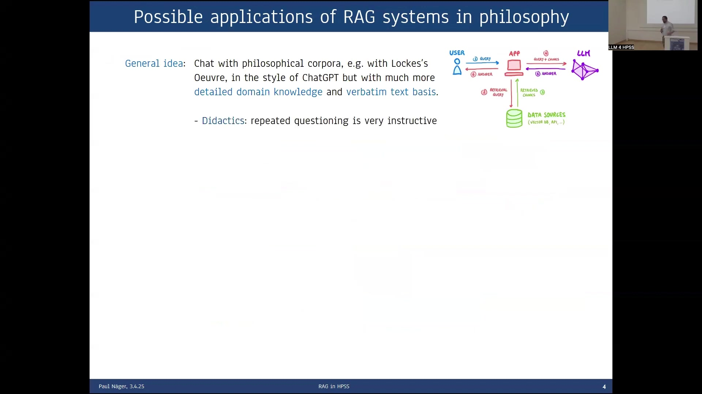
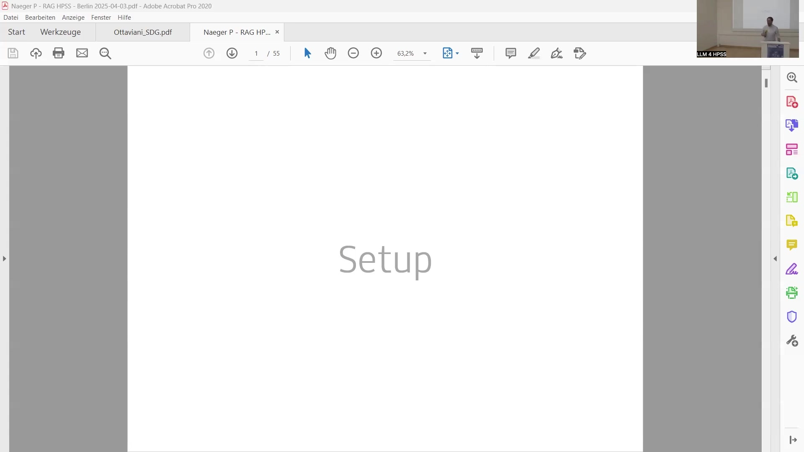
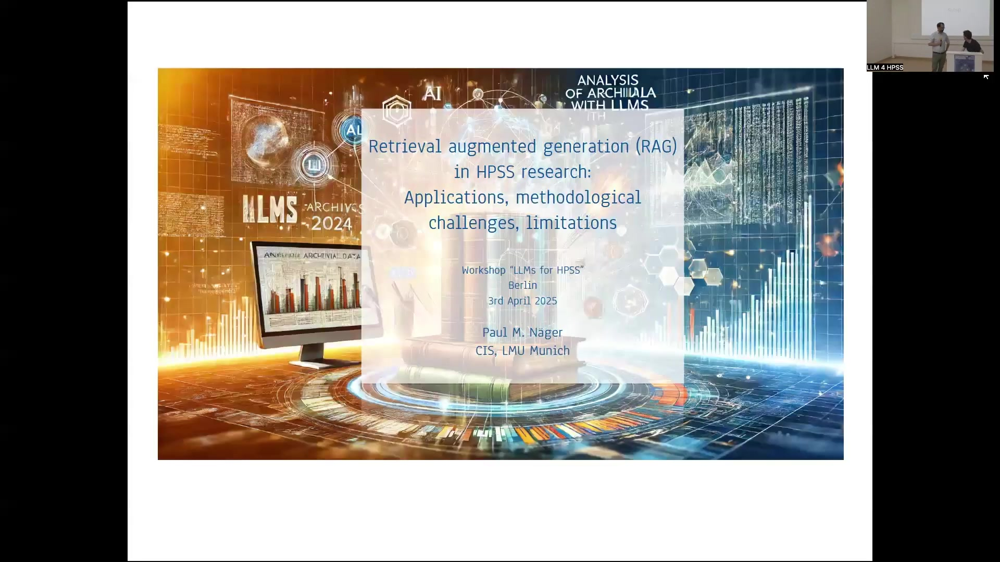
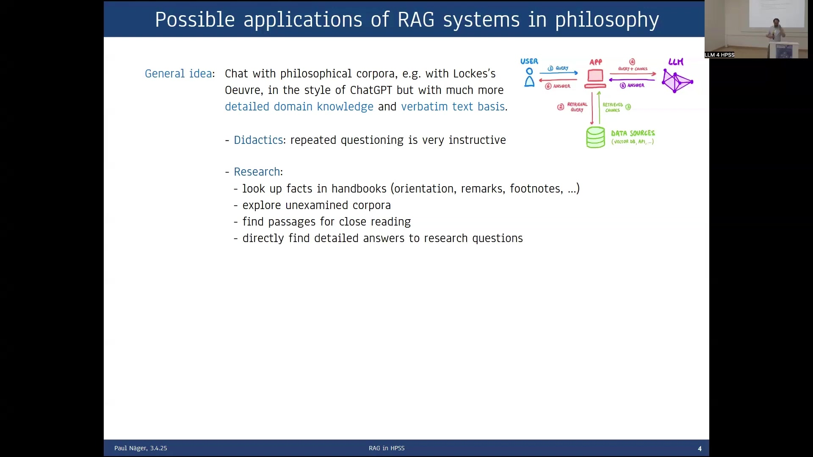
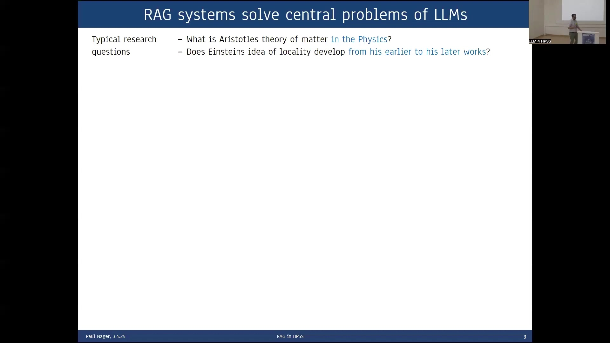
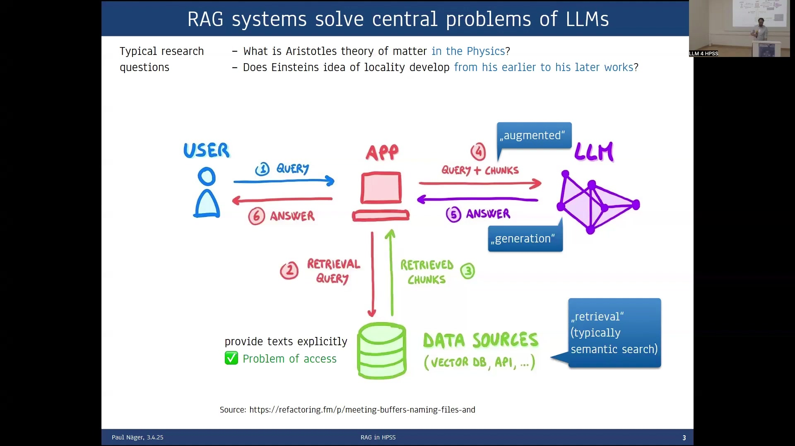
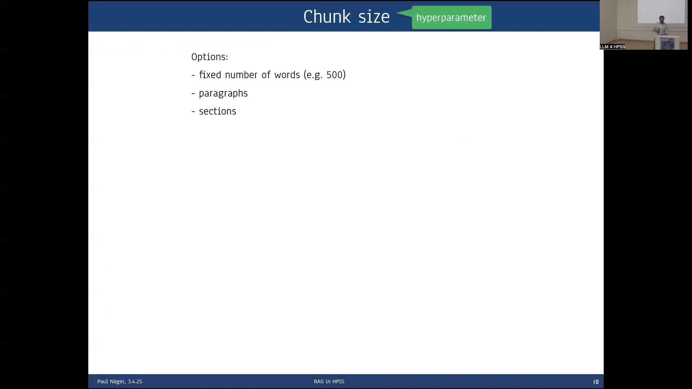
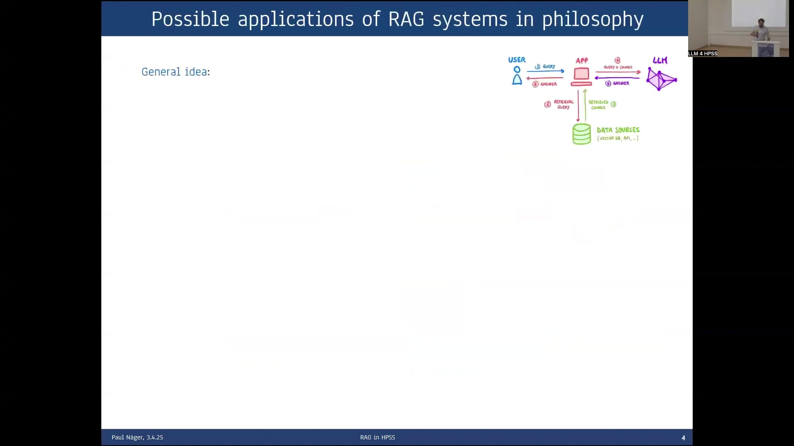

12 Retrieval Augmented Generation (RAG) in HPSS Research: Applications, Methodological Challenges, and Limitations
Overview
Retrieval Augmented Generation (RAG) systems present a promising avenue for research, particularly within the Humanities and Social Sciences (HPSS). These systems offer distinct advantages, notably their capacity to integrate verbatim corpora alongside domain-specific or specialised knowledge. This integration facilitates the generation of more detailed answers and commendably reduces the occurrence of hallucinations often associated with standalone large language models (LLMs). Furthermore, the ability of RAG setups to cite relevant source documents renders them exceptionally well-suited for assisting in a multitude of scientific tasks, thereby enhancing research transparency and reliability.
However, the implementation and optimisation of RAG systems necessitate careful consideration. Practitioners must recognise that these systems invariably require meticulous tweaking; appropriate settings are highly contingent upon the specific corpus in use and the nature of the questions posed. Consequently, rigorous evaluation of RAG systems is crucial. This involves establishing a representative set of questions and corresponding expected answers to benchmark performance. A pertinent question arises regarding the effective application of RAG in unexplored corpora where such benchmarks may not yet exist. The involvement of domain experts—philosophers, in the context of this exploration—is therefore an essential requirement for meaningful assessment and refinement.
Despite their strengths, RAG systems encounter certain challenges. The quality of generated answers can diminish if no relevant documents are retrieved from the knowledge base, a scenario that calls for prompt adjustments. Moreover, for widely discussed overview questions, such as “What are the central arguments against scientific realism?”, RAG systems may occasionally provide results inferior to those of general-purpose LLMs. This, too, suggests a need for tailored prompting strategies in specific instances. Looking ahead, the development of more flexible, agentic RAG systems appears to be a key area for future work, potentially addressing some of these current limitations and expanding the utility of RAG in scholarly pursuits.

12.1 Introduction: RAG in HPSS Research
The exploration of Large Language Models (LLMs) for research in the History and Philosophy of Science and the broader Humanities and Social Sciences (HPSS) opens new frontiers. Amongst emerging methodologies, Retrieval Augmented Generation (RAG) commands particular attention. This chapter delves into the applications, methodological challenges, and inherent limitations of employing RAG systems within HPSS research, drawing upon experiences from a workshop on “LLMs for HPSS” held in Berlin. The central proposition is to harness the power of LLMs while grounding their outputs in verifiable textual sources, a critical desideratum for scholarly rigour.

12.2 Addressing Core LLM Limitations with RAG Systems
Large Language Models, despite their impressive generative capabilities, present certain inherent challenges for academic use. These include the potential for generating plausible yet incorrect information (hallucinations), difficulties in attributing information to specific sources, limitations imposed by context window sizes, and restricted access to specialised or up-to-date textual corpora. RAG systems offer a structured approach to mitigate several of these fundamental problems. They achieve this by synergising the retrieval of pertinent information from a defined corpus with the generative prowess of LLMs.
12.2.1 The RAG Process Illustrated
The typical RAG architecture involves several key stages. A user initiates the process with a query. This query is first used by an application to retrieve relevant text chunks from a designated data source, often a vector database populated with embeddings of the corpus. This retrieval step, typically employing semantic search, aims to find the most relevant passages. These retrieved chunks are then combined with the original query and fed as an augmented prompt to an LLM. The LLM, now equipped with specific contextual information, generates an answer. This answer is subsequently returned to the user via the application. This process directly addresses issues of data access by explicitly providing texts to the LLM, tackles context window limitations by supplying only the most relevant segments, and aids in attribution by enabling the citation of sources from which chunks were retrieved.

12.2.2 Benefits for Scholarly Inquiry
For HPSS research, this mechanism is particularly beneficial. Consider typical research questions such as, “What is Aristotle’s theory of matter in the Physics?” or “Does Einstein’s idea of locality develop from his earlier to his later works?”. RAG systems can consult a corpus of philosophical texts or scientific papers, retrieve relevant sections, and then synthesise an answer grounded in those specific sources. This approach enhances the reliability and verifiability of the generated responses, crucial aspects of scholarly investigation.
12.3 Developing a RAG System for Philosophical Corpora: A Case Study
To explore the practicalities of RAG in a philosophical context, an example system was developed using the Stanford Encyclopedia of Philosophy as its data source. This online handbook, a well-known and highly structured resource, served as the corpus. The content was scraped and converted into markdown format for integration into the RAG pipeline.

12.3.1 Initial Aims and Evolving Objectives
The initial aim was straightforward: to create a useful tool for the philosophical community. However, early experiences with coding and testing the system revealed a significant challenge. Setting up the system with a basic retrieval component and a generation component, as one might find in textbook examples, did not yield high-quality answers. In fact, the initial outputs were often worse than those obtained by posing the same queries directly to a standalone LLM like ChatGPT.
This observation led to a shift in objectives. Beyond tool creation, the project evolved into a qualitative study focused on the optimal setup of RAG systems specifically for philosophy. This involved investigating:
- Model choices, such as selecting the most suitable generative LLM and embedding model.
- Tuning of hyperparameters, including the number of documents to retrieve (top-k), maximum input/output token lengths, temperature or top-p for generation, and, critically, chunk size and overlap.
- Addressing further methodological challenges, for instance, the problem of retrieval semantic mismatch, and exploring solutions like reranking.
12.3.2 The Iterative Process of System Refinement
The process of improving the RAG system became one of iterative refinement. This involved extensive tweaking of models and hyperparameters. Algorithms were made more complex, for example by introducing reranking stages, in pursuit of better results. This iterative cycle of adjustment and testing underscored the empirical nature of RAG system development. Whilst a theoretical understanding of the components is essential, practical experimentation proves indispensable for optimisation.
12.3.3 Methodological Approach: Theoretically Grounded Experimentation
The core methodology adopted was one of theoretically grounded trial and error. The guiding question at each stage was: by which measures do the answers improve? This necessitates robust evaluation standards. In philosophy, answers are typically free-form, unstructured text, not simple atomic facts. Evaluating the correctness of complex propositions derived from philosophical texts is a non-trivial task. It requires careful assessment of whether the generated statements accurately reflect the source material, a process where sound evaluation becomes crucial. One cannot simply ask for easily verifiable data points, such as “What was Wittgenstein’s last place of living?”; rather, the system must handle nuanced arguments and interpretations.
12.4 Potential Applications in Philosophical Didactics and Research
The general idea underpinning the application of RAG systems in philosophy is to enable interactive engagement with philosophical corpora—for instance, conversing with the entirety of Locke’s Oeuvre—in a manner akin to ChatGPT, but with substantially more detailed domain knowledge and a foundation in verbatim text.

This capability opens up several promising applications:
- In didactics: The ability to engage in repeated questioning with a corpus can be highly instructive for students, allowing them to explore concepts and texts in depth.
- In research:
- Researchers can efficiently look up facts, remarks, or footnotes within extensive handbooks or collections.
- Unexamined or less familiar corpora can be explored more systematically.
- Specific passages relevant for close reading can be readily identified.
- Directly finding detailed answers to research questions becomes more feasible, grounded in the provided textual evidence.
12.5 Frontend Design and Comparative Evaluation Framework
To facilitate the qualitative evaluation essential for refining the RAG system, a specific frontend was developed. This interface provides a comparative setup, allowing for a direct side-by-side assessment of answers generated by an LLM alone (the benchmark) versus those produced by the RAG system.

12.5.1 Interface for Qualitative Assessment
The frontend displays the user’s query and then presents two responses. On one side, the answer from the chosen standalone LLM (e.g., ChatGPT) appears. On the other, the RAG system’s answer, generated using the Stanford Encyclopedia of Philosophy corpus, is shown. This comparative view significantly aids in discerning the added value of the RAG approach, such as increased detail, accuracy, or grounding in the source material. For example, when asked “What is priority monism?”, the RAG system can provide a response that directly references and synthesises information from specific texts within the encyclopedia, often highlighting key definitions, contrasting views (like existence monism or priority pluralism), and historical proponents (such as Plato or Spinoza), complete with references to the source texts (e.g., “Text 0”).
12.5.2 Analysing Retrieved Sources
A crucial component of the output section is the list of found texts. This feature provides transparency into the retrieval process. Users can see the names of the articles and the specific section headings that the system identified as relevant to the query. Furthermore, it indicates which of these retrieved texts were actually included in the prompt sent to the LLM for generation and which, if any, were truncated due to prompt length limitations. This insight is invaluable for understanding the system’s behaviour and for diagnosing potential issues in the retrieval or generation stages.
12.6 Hyperparameter Optimisation: The Critical Role of Chunk Size
Amongst the various hyperparameters requiring optimisation, chunk size emerged as particularly influential. Chunking refers to the strategy used to divide the source documents into smaller segments for the retrieval process. The choice of chunk size directly impacts what information is available to the LLM for generating an answer.

12.6.1 Exploring Chunking Strategies
Several options for defining chunks were considered:
- A fixed number of words (e.g., 500 tokens or words), a common approach in computer science due to its clean, algorithmic definition. This method, however, risks cutting off text mid-sentence or mid-argument, irrespective of semantic coherence.
- Paragraphs, which offer a more semantically meaningful unit.
- Sections, as defined within the source corpus (e.g., main sections of an encyclopedia entry, including their headings).
12.6.2 Surprising Efficacy of Section-Based Chunking
Counterintuitively, the investigation revealed that chunking the Stanford Encyclopedia of Philosophy into its main sections yielded the best results. This finding was surprising because the average length of these sections (approximately 3,000 words) significantly exceeded the embedding model’s cutoff (around 512 words). Standard practice might suggest that such long chunks would perform poorly.
The superior performance of section-based chunking in this instance is likely attributable to the highly systematised nature of the Stanford Encyclopedia. Philosophical facts and arguments are rarely short and isolated; they typically require considerable space for presentation and contextualisation. It appears that the initial 500 words of a main section in this well-structured handbook often encapsulate the core themes and ideas of that entire section. Consequently, even if the embedding model only processed the beginning of the chunk, it captured sufficient essence for effective retrieval. This suggests that sticking to longer, semantically coherent units can be beneficial, particularly with systematically ordered documents.
12.6.3 Implications for Corpus-Specific Tuning
This outcome underscores a critical lesson: effective chunking strategy highly depends on the specifics of the corpus and the kinds of questions being posed. A strategy optimal for a highly structured encyclopedia may not be suitable for more heterogeneous or less formally organised texts. Future work plans to explore embedding models with longer context windows, such as Cohere Embed v3, to assess their impact on handling lengthy, information-rich chunks.
12.7 Enhancing Retrieval Precision through Reranking
A common challenge in retrieval systems is the occurrence of false positives, where some retrieved texts are not genuinely relevant to the user’s query. To address this, an additional step known as reranking can be incorporated into the RAG pipeline after the initial retrieval phase.

The primary aim of reranking is to reorder the initially retrieved documents according to their actual relevance to the question. One effective solution involves leveraging a generative LLM (gLLM) to evaluate the relevance of each retrieved text. The gLLM can perform a much more advanced semantic differentiation than the embedding model used for initial retrieval.
For this evaluation, scoring categories such as informativeness and the length of the relevant passage within the text can be defined. The gLLM assigns scores based on these categories, and a total score is calculated for each document. These scores then determine the new ranking.
Evaluations of this reranking approach indicate very good results in improving the precision of the documents ultimately passed to the generation stage. However, this enhancement comes at a cost: employing an additional LLM call for each retrieved document significantly multiplies the computational expense and latency of the system.
12.8 Concluding Reflections: Advantages, Cautions, and Future Challenges
The exploration of Retrieval Augmented Generation systems within the Humanities and Social Sciences, particularly using philosophical corpora like the Stanford Encyclopedia of Philosophy, reveals a technology of considerable promise, albeit one that requires careful implementation and ongoing development.
RAG systems demonstrate clear advantages. They successfully integrate verbatim corpora and specialised domain knowledge, leading to more detailed and nuanced answers compared to standalone LLMs. This grounding in source material also results in a welcome reduction in the frequency of “hallucinations”. A key strength for scholarly work is the capacity for citation, allowing users to trace information back to relevant documents, thereby making the RAG setup highly suitable for assisting in numerous scientific tasks.
Nevertheless, several cautions must be observed. RAG systems are not “plug-and-play” solutions; they invariably necessitate careful tweaking and customisation. The optimal settings for retrieval, chunking, and generation are highly dependent on the specific characteristics of the corpus and the types of questions anticipated. Consequently, the evaluation of RAG systems is of paramount importance. This requires developing representative sets of questions and expected answers for benchmarking. For unexplored corpora, determining appropriate evaluation strategies remains an open question. Crucially, the expertise of domain specialists—in this case, philosophers—is indispensable for assessing the quality and relevance of RAG outputs and for guiding system refinement.
Looking forward, certain challenges persist. If the retrieval step fails to find relevant documents, the quality of the generated answer predictably decreases. In such scenarios, prompt engineering to adjust the query becomes necessary. For broad, widely discussed overview questions (e.g., “What are the central arguments against scientific realism?”), RAG systems can sometimes produce results that are less comprehensive or fluent than those from a general LLM. Again, prompt adjustments may be required. These observations point towards the need for more flexible and adaptive systems. The development of agentic RAG systems, capable of more sophisticated reasoning and strategy selection, represents a promising direction for future research, potentially overcoming some of the current limitations and further unlocking the potential of RAG for scholarly inquiry.